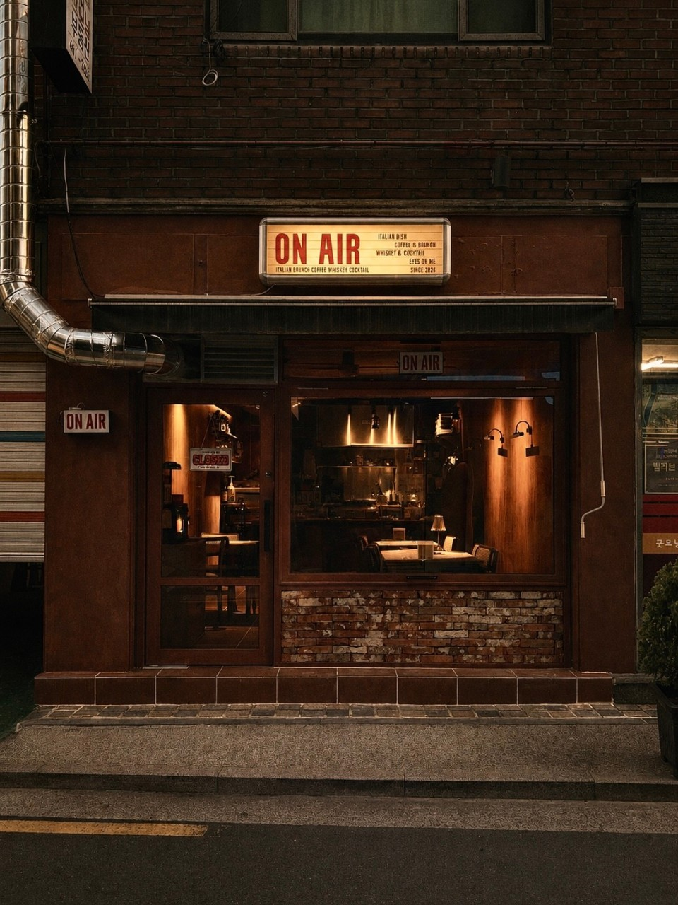
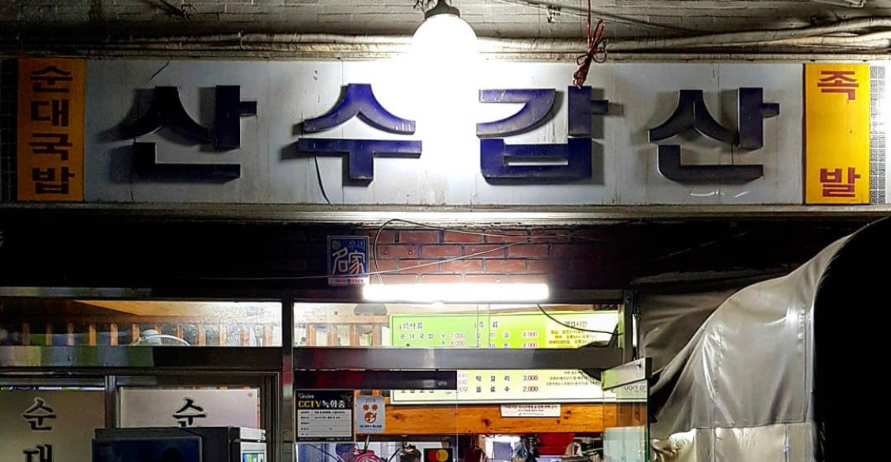

온에어
바리스타 겸 바텐더와 목소리 좋은 이탈리안 셰프가 함께 운영하는 브런치 앤 캐주얼 다이닝 바. 낮에는 커피, 밤에는 술을 판다. 셰프가 음식에 진심이고 혼술하러 가기 좋은 곳.
상세보기
산수갑산
푸짐한 양의 순대와 얼큰한 순댓국으로 유명한 곳. 깔끔한 분위기는 하지만 정겨운 분위기와 넉넉한 서비스로 단골이 꽤 많다. 주로 중장년층이 술 한잔을 하기 위해 많이 찾는다. 머릿고기와 순대, 간 등 다양하게 나오는 순대모둠이 인기메뉴.
상세보기